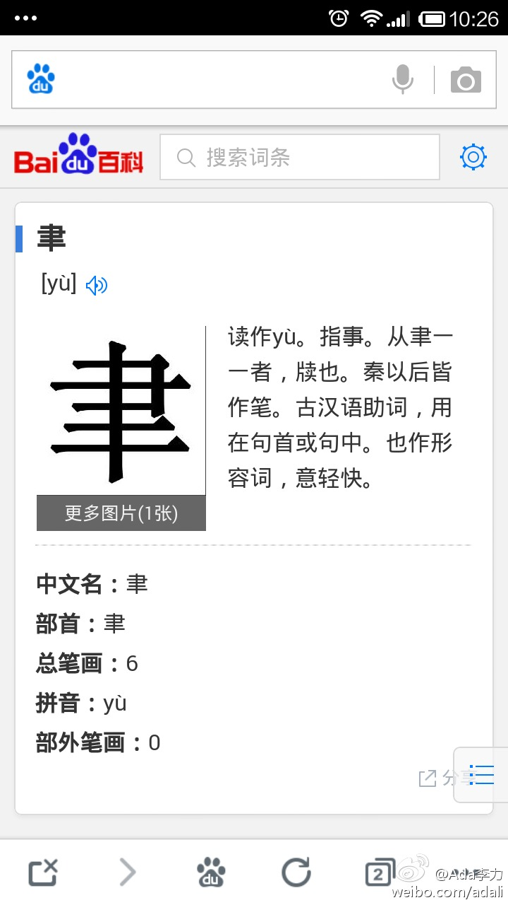

#姣姣#问我一个生字，我猜念"律"，输入拼音出一系列字，开始找。姣姣在旁看说不是这样找，她拿过手机，熟练地翻出手写输入，迅速地找到了这个生字及读音。- 对90后，00后网络原住民的说法，再一次有了深刻印象。而且，做父母的也很难以记忆性知识在孩子面前树立权威了。 
开发环境，测试环境，生产环境，这些环境的安装和配置一直很花时间，因为每个用的电脑操作系统不一样，习惯的IDE也不一样。最近刚想到可以在本地电脑上装虚拟机，当测试环境，配置和生产环境一样。不然，仅仅是不同环境下更改目录配置，就是很讨厌的事情。
记得之前在新加入一个大的软件项目组里时，仅仅是把各种开发工具和开发环境搭建起来，就能花上一个星期之久。这些工作本来是可以做得简化许多。@Ada李力:开发环境，测试环境，生产环境，这些环境的安装和配置一直很花时间，因为每个用的电脑操作系统不一样，习惯的IDE也不一样。最近刚想到可以在本地电脑上装虚拟机，当测试环境，配置和生产环境一样。不然，仅仅是不同环境下更改目录配置，就是很讨厌的事情。
Carol和我聊时，说这只不过是把大学时的训练方式换到弹钢琴上了，觉得是非常普通的方法论。其他人的反应倒让她发现，不是所有人都能这样分解任务。而Carol自己是一点也不会弹钢琴。@Ada李力:同事Carol辅导孩子弹钢琴，让孩子分三个阶段，每个阶段解决不同的问题，第一阶段是不要弹错，第二阶段是弹熟练，第三阶段是加入感情体会和表达。其他妈妈听得很佩服，觉得她总结得非常好。
这个方法不错。//@石梅湾畔: 百度“津没三点水”一搜就出来，会搜索到哪都管用。@Ada李力:#姣姣#问我一个生字，我猜念"律"，输入拼音出一系列字，开始找。姣姣在旁看说不是这样找，她拿过手机，熟练地翻出手写输入，迅速地找到了这个生字及读音。- 对90后，00后网络原住民的说法，再一次有了深刻印象。而且，做父母的也很难以记忆性知识在孩子面前树立权威了。
微博果然是好地方，马上有人推荐了相关工具。谢谢@__HOWELL__ 推荐Docker, @我们的奋斗 推荐Vagrant //@Ada李力: 记得之前在新加入一个大的软件项目组里时，仅仅是把各种开发工具和开发环境搭建起来，就能花上一个星期之久。这些工作本来是可以做得简化许多。@Ada李力:开发环境，测试环境，生产环境，这些环境的安装和配置一直很花时间，因为每个用的电脑操作系统不一样，习惯的IDE也不一样。最近刚想到可以在本地电脑上装虚拟机，当测试环境，配置和生产环境一样。不然，仅仅是不同环境下更改目录配置，就是很讨厌的事情。
回复@西瓜大丸子汤://@西瓜大丸子汤:回复@Ada李力: 先是文档管理，然后就会遇到知识管理，然后是合作知识管理，然后是查找和搜索，然后是任务管理，然后所有的人会恨所有的人 [呵呵]@Ada李力:果然是屁股决定脑袋，我现在经常琢磨的做事怎么能更有效率些，当其他人也需要做同样事情时，如何不做重复工作。－ 所以现在就很注重文档整理，因为这些是未来交接和培训的资料。
因为长时间接受的是系统化的训练和思维，解决问题时常常会多想几步，因而解决方案在讲究快和反应迅速的互联网开发领域，往往显得有些累赘。目前我还在找一个平衡。@Ada李力:果然是屁股决定脑袋，我现在经常琢磨的做事怎么能更有效率些，当其他人也需要做同样事情时，如何不做重复工作。－ 所以现在就很注重文档整理，因为这些是未来交接和培训的资料。
#姣姣#每天都会问我同样的问题：“妈咪，你今天出去吗？”。我回答得都有些烦了，今天问她是喜欢看我每天都呆在家里吗？她点头，我问为什么，因为在家我也是忙自己的事情，不怎么理她。姣姣说：“你在家的时候，我觉得自由些”。[呵呵]
回复@路君atHP点com:谁管孩子学习，孩子就觉得跟谁在一起不自由。 //@路君atHP点com:你们家好像有点儿反了。多数姑娘都感觉跟爹在一起自由。@Ada李力:#姣姣#每天都会问我同样的问题：“妈咪，你今天出去吗？”。我回答得都有些烦了，今天问她是喜欢看我每天都呆在家里吗？她点头，我问为什么，因为在家我也是忙自己的事情，不怎么理她。姣姣说：“你在家的时候，我觉得自由些”。[呵呵]
疑问，数273个桔子要花多长时间呢?@倪萍:这么小一棵桔树，结了273个桔子，硕果累累啊！可丰收了吧，你却没有喜悦。这像一个年轻母亲，自己还没长大，却糊里糊涂生了一堆孩子。心疼小树，想摘下些桔子，让它歇歇。伸出手了，却又不忍心让它们母子分离，毕竟从开花到结果，它们一直生生相息。昨夜泡了一大盆黄豆瓣，今天连水带豆埋进土里了⋯⋯
因为比较熟悉VirtualBox, 所以直接下载了Vagrant试用。发现是很方便，所有虚拟机配置信息都在一个vagrantfile文件里。目前看是文件映射功能用处最大。－ 其实把VitualBox玩好了，也可以不用Vagrant。